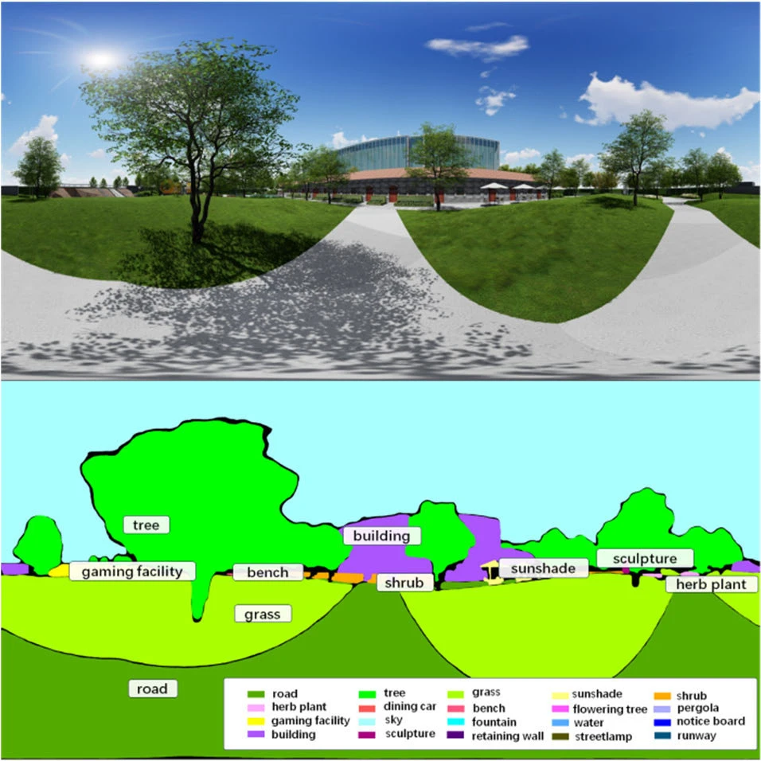

2026–present · Postdoctoral research
Measuring the Healing Potential of Urban Spaces
Identification and Optimization of Spatial Healing Efficacy Based on Multimodal Human-Factor Measurements

Research focus
At Tongji University, I study spatial healing efficacy with Associate Prof. Zheng Chen. The project focuses on identifying and optimising restorative spatial qualities through multimodal human-factor measurements.
Approach and contribution
- Environmental perception and restorative environments
- Multimodal human-factor assessment
- Translation of human-response evidence into spatial design
Outcomes and status
Ongoing research. Publications from my doctoral work provide a methodological foundation for assessing landscape perception and emotional responses.
Explore related publications